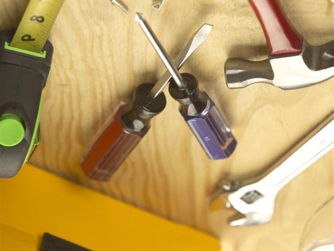
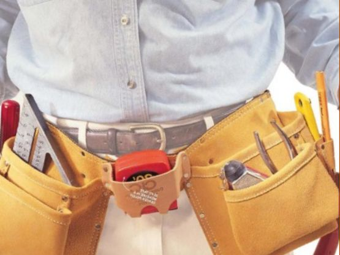

Качественный электромонтаж, Стаж 12 лет. Частный электрик, недорого.
Тел. 8 903 594 95 24 Николай.

Мелкий домашний ремонт.
Частный мастер.
В современном мире катастрофически не хватает свободного времени.
Столкнувшись с бытовой проблемой, человек не всегда находит возможность справиться с ней. Мелкий домашний ремонт подразумевает затрату времени и сил. Немногие люди способны осуществить электромонтажные, плотницкие, столярные, сантехнические и другие работы.

Часто требуется в квартире повесить люстру либо полочку, починить розетку, установить раковину или унитаз, или собрать мебель. Для выполнения подобных задач необходимо не только свободное время, но и подходящая квалификация и набор инструментов. Согласитесь, что не каждая домохозяйка имеет в своём распоряжении профессиональное оборудование для починки электропроводки или для монтажа сантехники. Не стоит самостоятельно осуществлять мелкий домашний ремонт или обращаться за помощью к некомпетентным людям, которые не разбираются в подобных делах.
Неквалифицированные действия нанесут ещё больший урон неисправным предметам и вещам.
Стоит знать, что услуга электрик на час зарекомендовала себя с лучшей стороны.
Существенное количество людей заказывают данный сервис.
В этом нет ничего удивительного, ведь предоставляется возможность получить высококачественное обслуживание от разнопрофильного специалиста по весьма демократической и приемлемой стоимости. Невзирая на сложность бытовой проблемы, универсальный и трудолюбивый мастер решит в максимально сжатые сроки поставленную заказчиком задачу. Заинтересованному в услуге человеку не нужно искать разных специалистов и тратить на поиски своё драгоценное время. Мастер-универсал выполнит большой объем работы и гарантирует положительный результат.
Почему мы!
Высокопрофессиональная и исполнительная бригада оказывает собственным клиентам актуальную и востребованную услугу «Муж на час».

В специализированной компании имеется штат высококлассных и разноплановых специалистов. Квалифицированные и опытные столяры, сантехники, электрики, плотники, мастера по отделочным работам способны выполнить добросовестно мелкий домашний ремонт. На предоставляемый сервис существует гарантия. В случае если потребуется грамотная консультация, то сотрудники специализированной компании готовы помочь с этим. Менеджеры профессиональной бригады всегда рады людям, которым необходима помощь в домашнем ремонте. Заказывайте сервис «Муж на час» в любое удобное время.

Сделать электрику в квартире.
Расценки на электропроводку квартир.
Провести электропроводку в новостройке.
Электромонтаж в частном доме.
Электрика в загородном доме.
Сколько стоит замена электропроводки в двухкомнатной квартире?.
Сколько стоит проводка в 3 ком квартире?
Сколько стоит проложить проводку в четырех комнатной квартире?
Сколько стоит сделать внутреннюю проводку?
Стоимость штробление стен.
Электромонтаж двухкомнатной квартиры.
Замена электропроводки в панельном доме.
Электромонтаж проводов в бане.